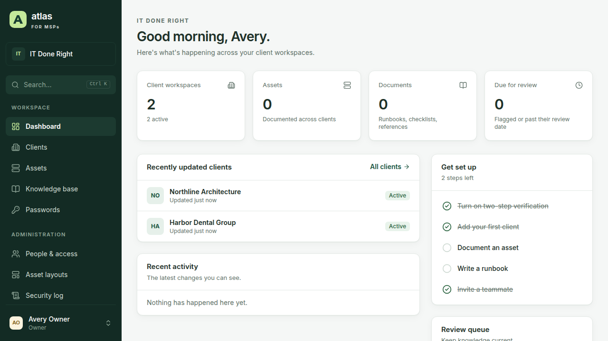
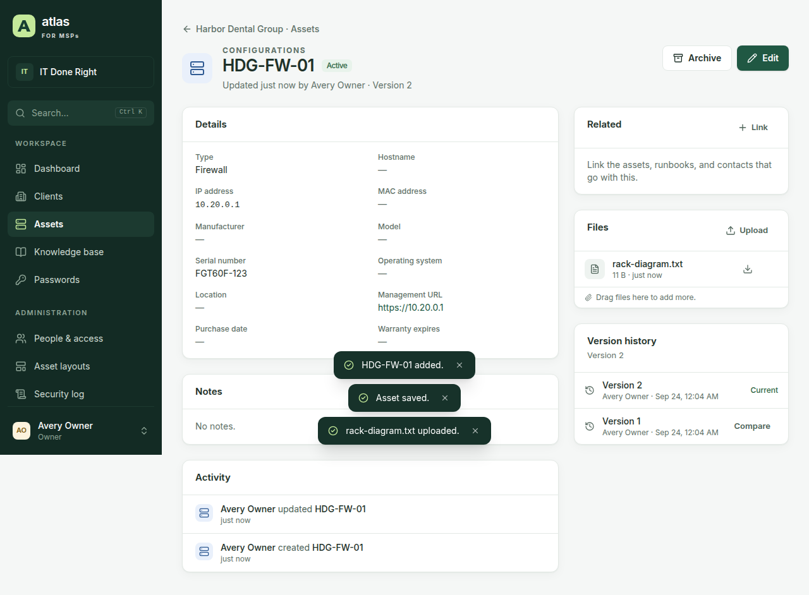
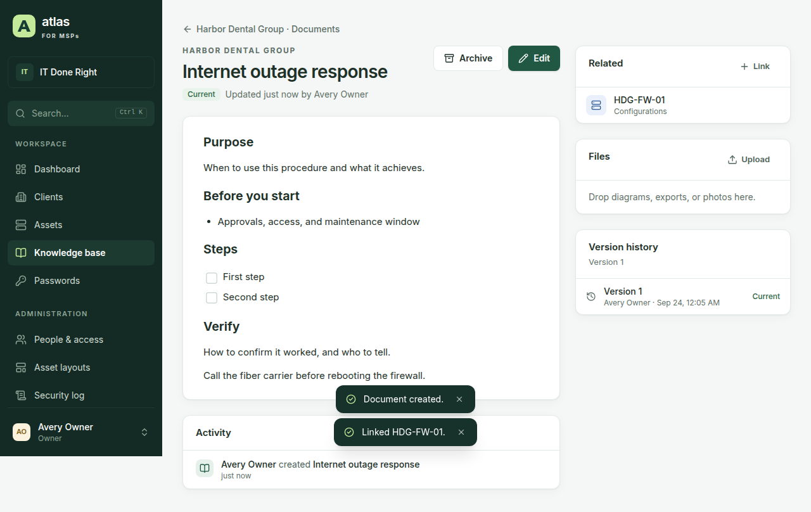
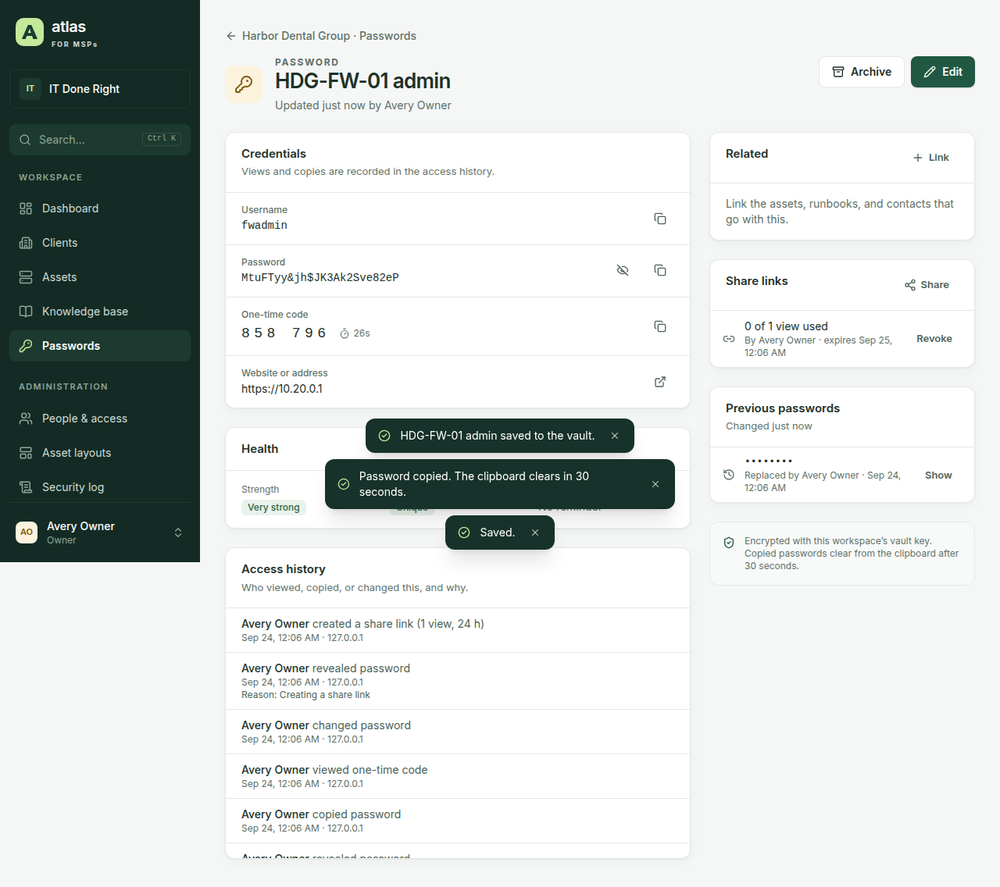
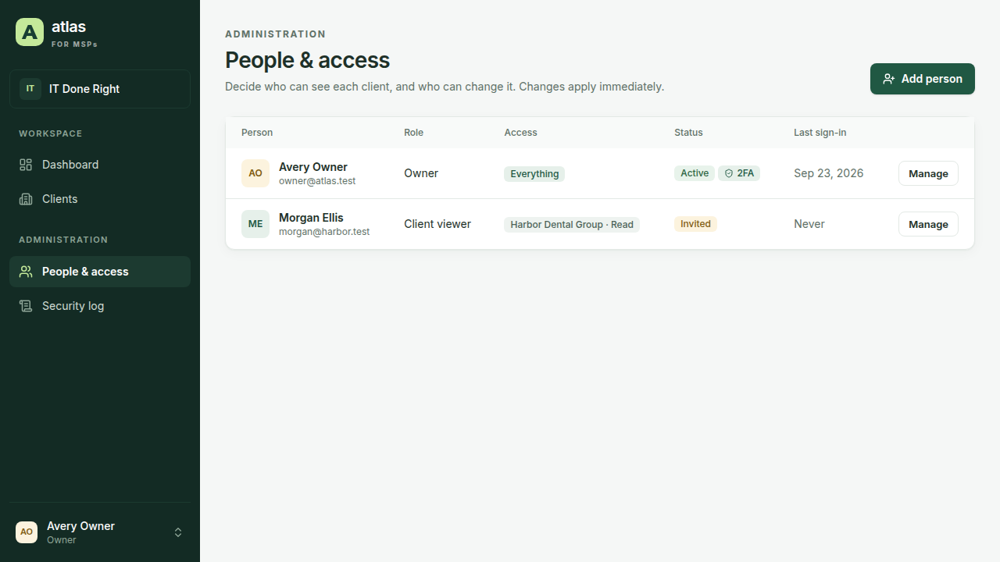

Documentation that stays current
Assets built from layouts, runbooks with checklists and review dates, and version history with line-by-line comparison and restore.
MSP Atlas 1.0.1
Client workspaces, flexible assets, runbooks, and an encrypted credential vault in one self-hosted application — with per-client access for technicians and read-only access for the clients you support.
Assets built from layouts, runbooks with checklists and review dates, and version history with line-by-line comparison and restore.
Every reveal, copy, change, and share is recorded. Restrict entries to named people, and require a reason for each reveal.
Per-client access levels and groups. A client you can't access looks exactly like one that doesn't exist.
Import from Hudu or CSV, export any client as a zip, and automate with a REST API and scoped API keys.
Product tour
Each client has its own assets, documents, passwords, contacts, locations, and activity. Ctrl+K search finds any of them — including by IP address or serial number — and returns only what you're allowed to see.





How it works
HttpOnly, Secure, SameSite=Strict cookies, plus a CSRF token on every change.Browser (React, strict CSP)
|
v
apps/server Fastify checks, sessions, MFA,
per-client authorization
|
+--> vault envelope encryption
+--> backups encrypted .atlasbak files
+--> KeyProvider master key, never
stored in the database
|
v
PostgreSQL 16 + attachments folderFull detail in the security model.
Before you store client credentials
Version 1.0.1 covers documentation, the vault, accounts and security, the REST API, Hudu and CSV import, per-client exports, encrypted backups with verified restore, a system status page, a read-only client portal, and Docker or Windows hosting. Not yet included: single sign-on with Microsoft Entra ID, PSA and RMM integrations, a browser autofill extension, and IT Glue or ITBoost importers.